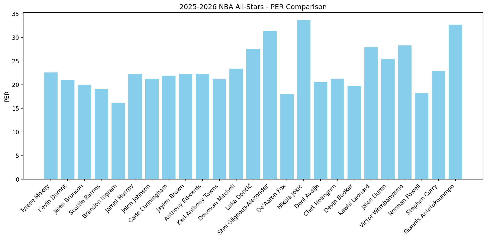

Code
import pandas as pd
import matplotlib.pyplot as plt
url = "https://www.basketball-reference.com/leagues/NBA_2026_advanced.html"
table = pd.read_html(url)
# Selects table with all the data we want
players = table[0]When every player is elite, it can be difficult to tell who is truly standing out among the stars. Traditional box score stats like points or rebounds only tell part of the story. Using advanced analytics allows us to quantify overall contributions, efficiency, and impact, helping identify players who might be undervalued or underacknowledged by casual fans.
In this tutorial, you’ll learn how to load NBA data from publicly available sources and use Python to explore these advanced metrics. The dataset we’ll use contains advanced stats for major players in the current NBA season (2025–2026) and is available at Basketball Reference. By the end of this guide, you’ll be able to filter, visualize, and compare top performers using meaningful metrics.
We first want to import the libraries we’ll be using for this, as well as the data. For this project we’ll be using pandas and matplotlib. These will allow for us to handle the data and eventually visualize it. There are also sometimes multiple tables on the site, so using table[0] selects the first one.
Let’s look at what our data looks like without any filtering.
| Rk | Player | Age | Team | Pos | G | GS | MP | PER | TS% | ... | USG% | OWS | DWS | WS | WS/48 | OBPM | DBPM | BPM | VORP | Awards | |
|---|---|---|---|---|---|---|---|---|---|---|---|---|---|---|---|---|---|---|---|---|---|
| 0 | 1.0 | Tyrese Maxey | 25.0 | PHI | PG | 53.0 | 53.0 | 2046.0 | 22.5 | 0.597 | ... | 29.2 | 5.3 | 2.1 | 7.4 | 0.174 | 5.2 | 0.5 | 5.8 | 4.0 | AS |
| 1 | 2.0 | Amen Thompson | 23.0 | HOU | PG | 53.0 | 53.0 | 1974.0 | 17.8 | 0.567 | ... | 20.2 | 3.5 | 2.5 | 6.0 | 0.146 | 0.9 | 0.9 | 1.8 | 1.9 | NaN |
| 2 | 3.0 | Mikal Bridges | 29.0 | NYK | SF | 56.0 | 56.0 | 1921.0 | 16.5 | 0.602 | ... | 17.5 | 4.0 | 2.2 | 6.2 | 0.155 | 2.0 | 1.3 | 3.3 | 2.6 | NaN |
| 3 | 4.0 | Scottie Barnes | 24.0 | TOR | PF | 55.0 | 55.0 | 1890.0 | 19.5 | 0.575 | ... | 24.1 | 2.3 | 3.2 | 5.5 | 0.139 | 1.7 | 2.2 | 3.8 | 2.8 | AS |
| 4 | 5.0 | Julius Randle | 31.0 | MIN | PF | 56.0 | 56.0 | 1882.0 | 20.1 | 0.599 | ... | 26.5 | 4.4 | 2.3 | 6.6 | 0.169 | 2.5 | 0.1 | 2.6 | 2.2 | NaN |
5 rows × 29 columns
We can see that each player has their associated advanced player statistcs. It looks like we’ve imported everything correctly!
The data is already in a really nice format so the majority of our filtering will just be to focus on a subset of players rather than doing any cleaning of data.
There is one common issue when using Basketball Reference. It’s that the Rk tab at the top of the table actually repeats after about 20 or 30 cells. We want to get rid of that so we don’t have any issues with it farther down the line.
Now we want to filter the data to the best of the best players, the All-Stars for this NBA season. All-Stars in the NBA are selected by a combination of players and fans voting on who they think the best players in the NBA are currently. To do this I just created a list with every All-Star and then filtered only for NBA players that are within that list.
all_stars = ["Scottie Barnes","Devin Booker","Cade Cunningham", "Jalen Duren","Anthony Edwards",
"Chet Holmgren","Jalen Johnson","Tyrese Maxey","Jaylen Brown","Jalen Brunson",
"Kevin Durant","De'Aaron Fox","Brandon Ingram", "Lebron James","Kawhi Leonard",
"Donovan Mitchell","Stephen Curry","Deni Avdija","Luka Dončić",
"Shai Gilgeous-Alexander","Nikola Jokić", "Jamal Murray","Norman Powell",
"Alperen Sengun","Pascsal Siakam","Karl-Anthony Towns","Victor Wembanyama",
"Giannis Antetokounmpo"]
# Filters DataFrame to just All-Star players
all_star_players = players[players["Player"].isin(all_stars)]As I referenced earlier I will be using matplotlib for this portion. The advanced stat of my choosing is going to be PER (Player Efficiency Rating). PER is a formula that combines all the good and bad things a player does into a single number. It’s a good way to get a sense of how all-around elite a player is.
# Ensures that PER is treated as a numeric type
all_star_players["PER"] = pd.to_numeric(all_star_players["PER"], errors="coerce")
# Make the plot BIG
plt.figure(figsize=(12,6))
# Plots players as bars
plt.bar(all_star_players["Player"], all_star_players["PER"], color="skyblue")
# Makes x-axis labels readable
plt.xticks(rotation=45, ha="right")
plt.ylabel("PER")
plt.title("2025-2026 NBA All-Stars - PER Comparison")
plt.tight_layout()
# Save figure for embedding
plt.savefig("all_stars_per.png")
We now have a beautiful plot! We can see that the three standout players are Nikola Jokic, Shai Gilgeous-Alexander, and Giannis Antetokounmpo, which reflects the validity of this advanced stat as all three of those players are considered the most valuable to their team. It’s worth mentioning that the league average for PER is about 15, and every single person in this set is above that number.
You can now use this info to do all sorts of player comparisons for yourself! Or you even look into differences in team stats as that data is also available on Basketball Reference.
---
title: "Visualizing Top NBA Performers in Python"
format:
html:
code-fold: show
editor: visual
---
## Introduction
When every player is elite, it can be difficult to tell who is truly standing out among the stars. Traditional box score stats like points or rebounds only tell part of the story. Using **advanced analytics** allows us to quantify overall contributions, efficiency, and impact, helping identify players who might be undervalued or underacknowledged by casual fans.
In this tutorial, you’ll learn how to load NBA data from publicly available sources and use Python to explore these advanced metrics. The dataset we’ll use contains advanced stats for major players in the current NBA season (2025–2026) and is available at [Basketball Reference](https://www.basketball-reference.com/leagues/NBA_2026_advanced.html). By the end of this guide, you’ll be able to filter, visualize, and compare top performers using meaningful metrics.
## Loading in the Data
We first want to import the libraries we'll be using for this, as well as the data. For this project we'll be using pandas and matplotlib. These will allow for us to handle the data and eventually visualize it. There are also sometimes multiple tables on the site, so using `table[0]` selects the first one.
```{python}
import pandas as pd
import matplotlib.pyplot as plt
url = "https://www.basketball-reference.com/leagues/NBA_2026_advanced.html"
table = pd.read_html(url)
# Selects table with all the data we want
players = table[0]
```
Let's look at what our data looks like without any filtering.
```{python}
players.head()
```
We can see that each player has their associated advanced player statistcs. It looks like we've imported everything correctly!
## Filtering the Data
The data is already in a really nice format so the majority of our filtering will just be to focus on a subset of players rather than doing any cleaning of data.
There is one common issue when using [Basketball Reference](https://www.basketball-reference.com/leagues/NBA_2026_advanced.html). It's that the **Rk** tab at the top of the table actually repeats after about 20 or 30 cells. We want to get rid of that so we don't have any issues with it farther down the line.
```{python}
players = players[players["Rk"] != "Rk"]
```
Now we want to filter the data to the best of the best players, the All-Stars for this NBA season. All-Stars in the NBA are selected by a combination of players and fans voting on who they think the best players in the NBA are currently. To do this I just created a list with every All-Star and then filtered only for NBA players that are within that list.
```{python}
all_stars = ["Scottie Barnes","Devin Booker","Cade Cunningham", "Jalen Duren","Anthony Edwards",
"Chet Holmgren","Jalen Johnson","Tyrese Maxey","Jaylen Brown","Jalen Brunson",
"Kevin Durant","De'Aaron Fox","Brandon Ingram", "Lebron James","Kawhi Leonard",
"Donovan Mitchell","Stephen Curry","Deni Avdija","Luka Dončić",
"Shai Gilgeous-Alexander","Nikola Jokić", "Jamal Murray","Norman Powell",
"Alperen Sengun","Pascsal Siakam","Karl-Anthony Towns","Victor Wembanyama",
"Giannis Antetokounmpo"]
# Filters DataFrame to just All-Star players
all_star_players = players[players["Player"].isin(all_stars)]
```
## Plotting
As I referenced earlier I will be using matplotlib for this portion. The advanced stat of my choosing is going to be **PER (Player Efficiency Rating)**. **PER** is a formula that combines all the good and bad things a player does into a single number. It's a good way to get a sense of how all-around elite a player is.
```{python}
# Ensures that PER is treated as a numeric type
all_star_players["PER"] = pd.to_numeric(all_star_players["PER"], errors="coerce")
# Make the plot BIG
plt.figure(figsize=(12,6))
# Plots players as bars
plt.bar(all_star_players["Player"], all_star_players["PER"], color="skyblue")
# Makes x-axis labels readable
plt.xticks(rotation=45, ha="right")
plt.ylabel("PER")
plt.title("2025-2026 NBA All-Stars - PER Comparison")
plt.tight_layout()
# Save figure for embedding
plt.savefig("all_stars_per.png")
```
## Conclusion
We now have a beautiful plot! We can see that the three standout players are **Nikola Jokic, Shai Gilgeous-Alexander, and Giannis Antetokounmpo,** which reflects the validity of this advanced stat as all three of those players are considered the most valuable to their team. It's worth mentioning that the league average for **PER** is about 15, and every single person in this set is above that number.
You can now use this info to do all sorts of player comparisons for yourself! Or you even look into differences in team stats as that data is also available on [Basketball Reference](https://www.basketball-reference.com/leagues/NBA_2026_advanced.html).